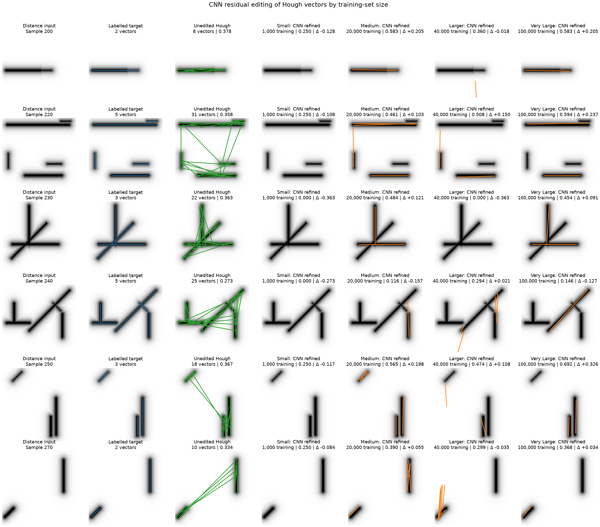
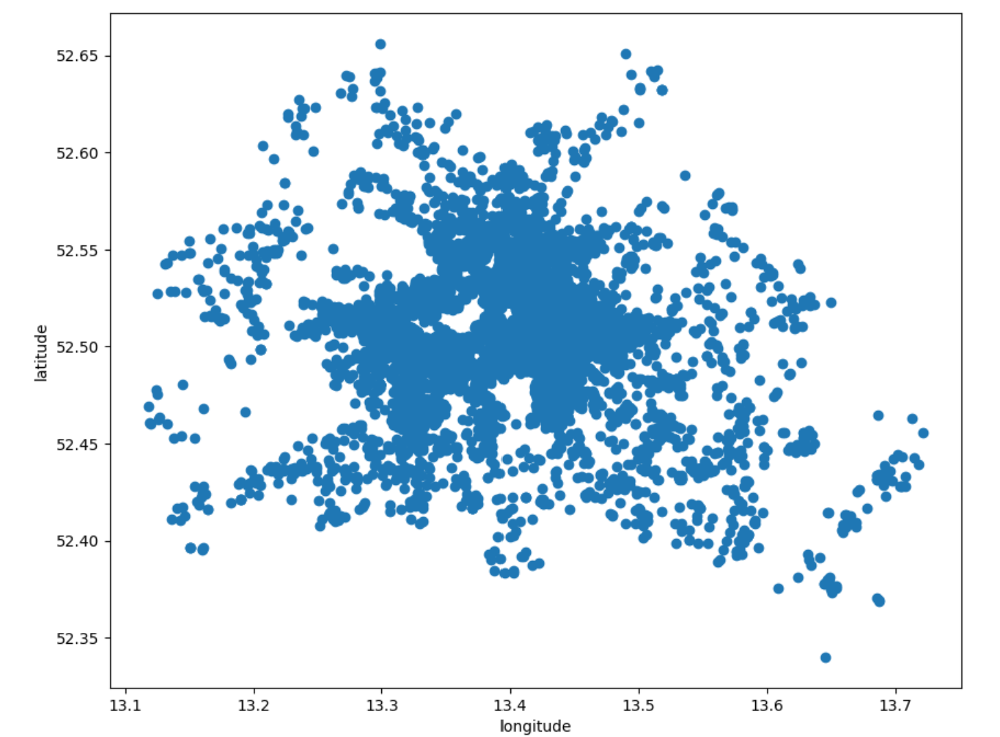
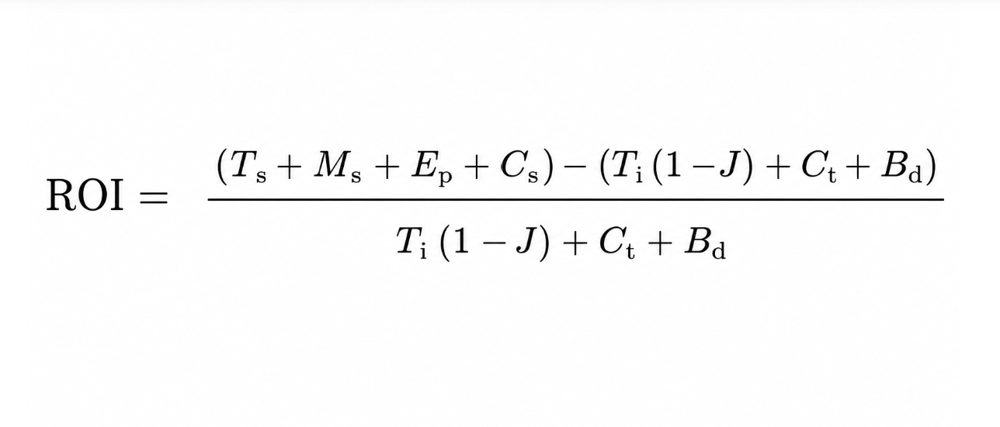

This page documents the coursework submitted for Module 2: Understanding Artificial Intelligence.

Final Project - Raster to Vector Conversion with Machine Learning
This project investigated the use of machine learning to convert rasterised engineering drawings into editable vectors. Classical vectorisation methods were compared with MLP and CNN models using standard metrics, a bespoke engineering score and visual evaluation. The Hough Transform achieved the strongest overall results, although a pipeline using machine learning to refine classical vector outputs showed the most promise. The investigation also highlighted issues including data leakage, overfitting, limited data and insufficient experiment planning.

Machine Learning Exploration
The Jupyter notebooks record my early exploration and learning in machine learning and data analysis. The notebooks use datasets such as Iris, Airbnb listings and advertising data to investigate data cleaning, visualisation and feature analysis. Later experiments explore supervised and unsupervised learning, including K-means clustering, tensors and the use of PyTorch. Together, the notebooks demonstrate the development of my understanding from basic data exploration to building and testing simple machine learning models.

Discussion Posts
The collaborative discussions explored two areas of artificial intelligence. The first considered how AI has become increasingly integrated into everyday life and the benefits, risks and ethical concerns and questions if AI always delivers the best return on investment. The second compared CNN-based image classification with traditional machine-learning methods using manually engineered features. This highlighted the greater flexibility and accuracy of CNNs, while also recognising their increased computational and data requirements. Engagement with the contributions of other students helped develop a more balanced understanding of both topics and demonstrated the value of considering technical performance alongside practical and ethical limitations.
Semminar Notes
The discussion notes capture my reflections and insights from the bi-weekly seminars. These notes include key takeaways, questions raised, and thoughts on the topics discussed. They serve as a record of my engagement with the material and my evolving understanding of artificial intelligence concepts.